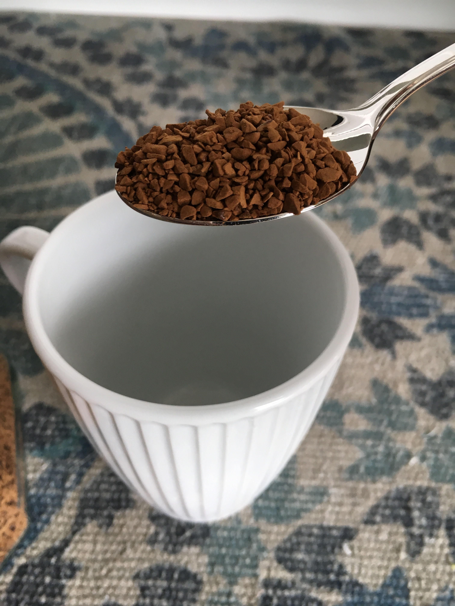
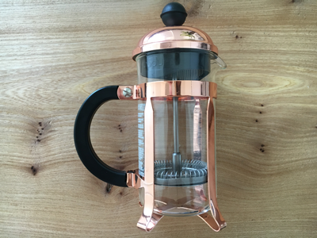
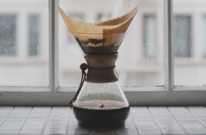

Kaffe I hjemmet
Er du i tvivl om hvordan du laver kaffe i dit eget hjem, eller mangler du inspiration til nye måder. Her kommer nogle forskellige tips og tricks.
Instant kaffe
Instant kaffe er ideel, når det skal gå hurtigt, smage godt og ikke være for dyrt. Her skal der bruges 1-2 teske instant kaffe som overhældes med kogt vand fra en elkeddel. Der findes et kæmpe udvalg af instant kaffe, og der er stor forskel på smagen. Prisen er også meget forskellig i forhold til kvalitet og indhold, og om det skal være økologisk og fairtrade. Jeg har her udvalgt tre forskellige instant kaffer man kan købe i supermarkedet:
- Nescafe Gold
- Merrild Instant
- Peter Larsen Instant Kaffe
Stempelkaffe
Stempelkaffe er en klassiker til god kaffe, der findes mange varianter af stempelkanderne, så alt efter hvor meget kaffe man ønsker at lave, kan man vælge sin kande derefter. For at lave stempelkaffe kræver det at man har kværnede kaffebønner. Ejer man ikke selv et kaffekværn er der stort set altid mulighed for at får kværnet sine udvalgte kaffebønner hos forhandleren. Udgangspunktet for en god stempelkaffe ved brug af 1 liter vand, lyder således:
- Den kværnede kaffe tilføjes til stempelkanden. Til en stempelkande hvor der tilføjes 1 liter, skal der ca. bruges 60 gram kaffe.
- Vandets temperatur skal være mellem 92-96 grader, hælde nu vandet over de kværnede bønner
- Lad kaffen trække i ca 4-6 min.
- Rør grundigt rundt i kaffen og sænk derefter filtret ned over kaffen med en rolig hånd
- Nyd din kaffe eller hæld den i en termokande for at holde en varm
Filterkaffe
Filterkaffe kan både laves på en kaffemaskine, hvor der blot tilføjes vand og malet kaffe og så sørger maskinen ellers for at lave kaffe ud fra den dosering af vand og kaffe man har hældt på. filterkaffen kan også laves med tragtmetoden. Egentlig er det samme princip som med kaffemaskinen, brotset fra at man ingen maskine bruger her. Her sætter men en tragt med kaffefilter ovenpå kanden som kaffen skal rinde ned i. Den malede kaffe tilføjes i filtret og herefter hældes det varme vand ned i filtret som herefter filtrere kaffen ned i kanden. En lækker måde at lave en god filterkaffe på.
Tips til filterkaffe:
Rengøring: Sørg altid for at rengøringen er i top under brygningen af kaffen. Det mindste skidt kan ødelægge smagen i din kaffe fuldstændig.
Vand: Sørg for at vandet har den rigtige temperatur (92-26 grader)
Varme: Hold på kaffens varme ved at hælde den i en termokande efter brygningen. På denne måde holder den både på varmen, men mister heller ikke den gode smag.